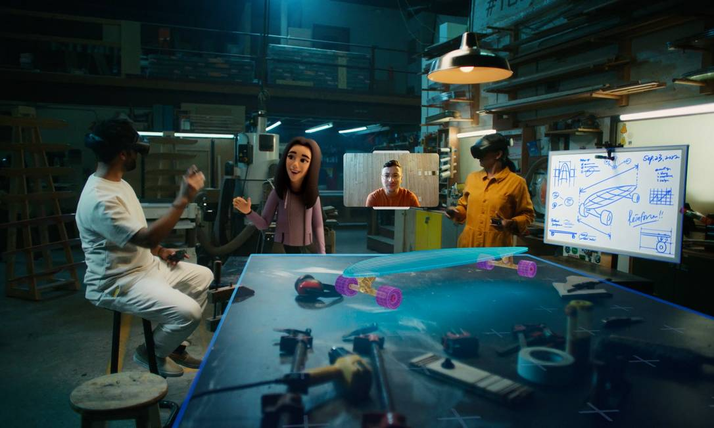

Inovações em Tecnologia
O lançamento do Windows 11 marcou uma nova era para os sistemas operacionais, oferecendo não apenas uma interface mais intuitiva e integrada, mas também suporte a novas tecnologias como DirectX 12 Ultimate, que promete revolucionar a experiência de jogo no PC. Além disso, a linha 2025 do MINI Cooper S está definida para oferecer uma combinação de potência e tecnologia avançada, destacando-se no mercado automotivo com novos recursos de conectividade e segurança.
A indústria de jogos continua a expandir com o lançamento de novos títulos e promoções de jogos, como os recentes lançamentos gratuitos na plataforma Steam e descontos substanciais em jogos para consoles Xbox. Essas iniciativas não só incentivam o crescimento da comunidade gamer, mas também aumentam o acesso a conteúdos diversificados e experiências de entretenimento interativo.
Eventos como a Campus Party Brasil 2024 estão marcando o calendário tecnológico, oferecendo uma plataforma para inovações emergentes e oportunidades de networking. Com foco em temas que vão desde inteligência artificial até sustentabilidade, esses eventos não apenas destacam o potencial transformador da tecnologia, mas também incentivam a colaboração e o desenvolvimento de soluções para desafios globais.
A SpaceX, através de seu serviço Starlink, está revolucionando a conectividade global com uma rede de internet via satélite que promete oferecer acesso rápido e confiável mesmo em áreas remotas. Esta iniciativa não apenas melhora a qualidade de vida em regiões carentes de infraestrutura digital, mas também abre novas possibilidades para o turismo e o desenvolvimento econômico.
Enquanto isso, avanços na computação quântica estão explorando novas fronteiras com o uso de cristais do tempo como possíveis circuitos para processadores quânticos. Esta pesquisa não só promete acelerar o desenvolvimento de computadores quânticos mais poderosos, mas também abre novas perspectivas para a ciência e a inovação tecnológica.
Evolução dos Mundos Virtuais em 2024

A convergência de inteligência artificial, blockchain e realidade virtual está criando novas oportunidades para experiências digitais mais imersivas e interativas. Plataformas como Decentraland estão liderando o caminho ao oferecer um espaço virtual onde os usuários podem não apenas explorar e interagir, mas também possuir e comercializar propriedades virtuais usando criptomoedas.
Jogos blockchain, como o "Cross The Ages", estão integrando elementos digitais e físicos para oferecer uma experiência de jogo única, onde itens digitais podem ser valorizados e comercializados no mundo real. Esta fusão de economia digital e física está não só transformando a indústria de jogos, mas também criando novas formas de interação social e econômica dentro dos mundos virtuais.
O metaverso não é mais apenas uma ideia futurística, mas uma realidade em rápida expansão que está moldando a forma como vivemos, trabalhamos e nos conectamos digitalmente. À medida que mais pessoas adotam essas tecnologias e exploram novas possibilidades, podemos esperar um impacto significativo na cultura, na economia e na sociedade como um todo.